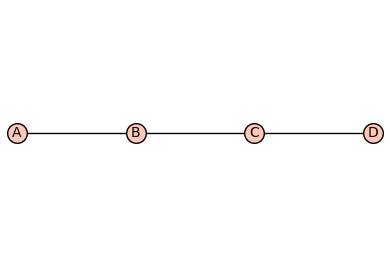
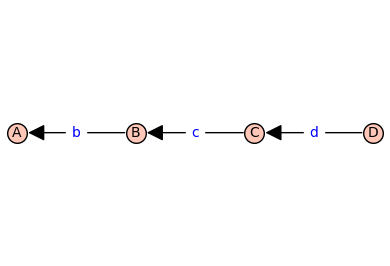
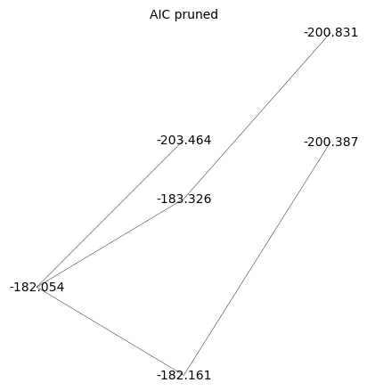
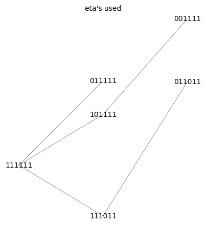

Plot Binding Curves#
%run receptor_tools.ipynb
import numpy as np
import random
from matplotlib import pyplot as plt
#G = graphs.HouseGraph()
G = graphs.PathGraph(4)
(G, T, KappaEta, A) = enumerate_allosteric_parameters(G,method='alpha',verbose=False)
G.show(edge_labels=False)
T.show(edge_labels=True)
show(table(KappaEta))
show(A)
mydoc(myfun, method='both')
Display the signature of myfun followed by the docstring of myfun.
Set method ='signature' or 'method = 'docstring' or 'method = 'both'
print_graph(G)
Prints the vertices and edges of the graph G.
generator(A, rowsum=True)
Creates the generator matrix ‘Q’ from the adjacency matrix ‘A’. By default the sum along each row of ‘Q’ is zero (‘rowsum=True’). For the sum along each column of ‘Q’ to be zero, set ‘rowsum=False’.
hill_diagramatic_method(Q)
Returns the spanning tree polynomials rooted in each vertex.
add_vertex_monomials(G=Graph on 0 vertices, method='integer', ring=False)
Add monomials to vertices of a graph.
The add_vertex_monomials function takes a graph G, as well as optional parameters method and ring. The function creates a new graph H with vertices labeled by monomials. The monomials are chosen based on the number of vertices in G. If the method parameter is set to ‘alpha’ and the number of vertices in G is less than or equal to 10, the monomials are chosen as alphabetical letters (‘a’ to ‘k’). Otherwise, the monomials are chosen as strings of the form ‘a0’, ‘a1’, …, ‘an-1’, where n is the number of vertices in G. The function then adds the vertices from G to H using the monomials as labels, and adds the edges from G to H using the monomials as endpoints. If the ring parameter is set to True, the function also creates a polynomial ring V with the chosen monomials and ‘invlex’ order, and returns both H and V. Otherwise, it returns only H.
INPUT:
G– graph object (default:Graph());method– integer (default:integer);
OUTPUT:
The graph with monomials as vertices
add_edge_monomials(G0, method='integer', edge_vars=['b', 'c', 'd', 'e', 'f', 'g', 'h', 'i', 'j', 'k', 'l', 'm', 'n', 'o', 'p', 'q', 'r', 's', 't', 'u', 'v', 'w', 'x', 'y', 'z'], ring=False, short_name=False)
Add monomials to edges of a graph.
The add_edge_monomials function takes a graph G, as well as optional parameters method, edge_vars, ring, and short_name. If method is set to ‘integer’, the function creates a polynomial ring using the given edge variables and assigns variables to the edges of the graph. The edge variables can be represented either as ‘e’ followed by the first vertex label or the first and second vertex labels concatenated. If the vertex labels are integers and the short_name parameter is set to True, the edge variables are created using only the first vertex label. If method is set to ‘alpha’, the function creates a polynomial ring using the given edge variables and assigns variables to the edges of the graph in reverse order. The number of edge variables used is determined by the size of the graph. The ring parameter, if set to True, injects the polynomial variables into the global namespace and returns the graph and the polynomial ring. Otherwise, it simply returns the graph.
INPUT:
G– graph object (default:Graph());method– integer (default:integer);
OUTPUT:
The graph with monomials as edges
add_edge_monomials_ver2(G, edge_labels='default', prefix='')
Add monomials to edges of a graph.
[NEED TO WRITE DESCRIPTION]
enumerate_allosteric_parameters(G=House Graph: Graph on 5 vertices, **kwargs)
Enumerate allosteric parameters of a receptor model.
[NEED TO WRITE DESCRIPTION]
INPUT:
G– graph object (default:Graph());method– integer (default:integer);
OUTPUT:
The graph with monomials as vertices
cartesian_power(G, k=2, edge_labels='cannonical')
Construct Cartesian power of a graph.
[NEED TO WRITE DESCRIPTION]
reduced_cartesian_power(G, k=2, edge_labels='cannonical', prefix='', independent=False)
Construct reduced Cartesian power of a graph.
[NEED TO WRITE DESCRIPTION]
reduced_cartesian_power_ver2(G, k, contexts=True, edge_labels=True)
<IPython.core.display.Markdown object>
combinatorial_laplacian(G, combinatorial_coefficients=False)
Construct the combinatorial Laplacian of a graph.
[NEED TO WRITE DESCRIPTION]
tree_polynomial(G, combinatorial_coefficients=False)
Construct the tree polynomial of a graph.
[NEED TO WRITE DESCRIPTION]


| \(1\) | \(2 \kappa_{\mathit{b}}\) | \(2 \kappa_{\mathit{b}} \kappa_{\mathit{c}}\) | \(2 \kappa_{\mathit{b}} \kappa_{\mathit{c}} \kappa_{\mathit{d}}\) |
| \(0\) | \(\kappa_{\mathit{b}}^{2} \eta_{\mathit{bb}}\) | \(2 \kappa_{\mathit{b}}^{2} \kappa_{\mathit{c}} \eta_{\mathit{bb}} \eta_{\mathit{bc}}\) | \(2 \kappa_{\mathit{b}}^{2} \kappa_{\mathit{c}} \kappa_{\mathit{d}} \eta_{\mathit{bb}} \eta_{\mathit{bc}} \eta_{\mathit{bd}}\) |
| \(0\) | \(0\) | \(\kappa_{\mathit{b}}^{2} \kappa_{\mathit{c}}^{2} \eta_{\mathit{bb}} \eta_{\mathit{bc}}^{2} \eta_{\mathit{cc}}\) | \(2 \kappa_{\mathit{b}}^{2} \kappa_{\mathit{c}}^{2} \kappa_{\mathit{d}} \eta_{\mathit{bb}} \eta_{\mathit{bc}}^{2} \eta_{\mathit{cc}} \eta_{\mathit{bd}} \eta_{\mathit{cd}}\) |
| \(0\) | \(0\) | \(0\) | \(\kappa_{\mathit{b}}^{2} \kappa_{\mathit{c}}^{2} \kappa_{\mathit{d}}^{2} \eta_{\mathit{bb}} \eta_{\mathit{bc}}^{2} \eta_{\mathit{cc}} \eta_{\mathit{bd}}^{2} \eta_{\mathit{cd}}^{2} \eta_{\mathit{dd}}\) |
n_states=G.order()
n_kappa=n_states-1
n_kappa_plus_eta = A.ngens()
n_eta=n_kappa_plus_eta-n_kappa
kappa_list = [A.gen(k) for k in range(n_kappa)]
print(f'kappa_list = {kappa_list}')
eta_list = [A.gen(k) for k in range(n_kappa,n_kappa_plus_eta)]
print(f'eta_list = {eta_list}')
phi=normalize(random_binary_array(n_states))
print(f'phi = {phi}')
Phi = dimerize(phi)
print(f'Phi = {Phi}')
print(f'KappaEta = {KappaEta}')
kappa_list = [kappa_b, kappa_c, kappa_d]
eta_list = [eta_bb, eta_bc, eta_cc, eta_bd, eta_cd, eta_dd]
phi = [0. 0.5 0.5 0. ]
Phi = [[np.float64(0.0), np.float64(0.0), np.float64(0.0), np.float64(0.0)], [0, np.float64(0.5), np.float64(0.25), np.float64(0.0)], [0, 0, np.float64(0.5), np.float64(0.0)], [0, 0, 0, np.float64(0.0)]]
KappaEta = [[1, 2*kappa_b, 2*kappa_b*kappa_c, 2*kappa_b*kappa_c*kappa_d], [0, kappa_b^2*eta_bb, 2*kappa_b^2*kappa_c*eta_bb*eta_bc, 2*kappa_b^2*kappa_c*kappa_d*eta_bb*eta_bc*eta_bd], [0, 0, kappa_b^2*kappa_c^2*eta_bb*eta_bc^2*eta_cc, 2*kappa_b^2*kappa_c^2*kappa_d*eta_bb*eta_bc^2*eta_cc*eta_bd*eta_cd], [0, 0, 0, kappa_b^2*kappa_c^2*kappa_d^2*eta_bb*eta_bc^2*eta_cc*eta_bd^2*eta_cd^2*eta_dd]]
# create the symbolic binding curve
FBindingKappaEta=make_symbolic_dimer_binding_curve(Phi,KappaEta)
show(FBindingKappaEta)
# add ligand dependencies randomly or manually
manual = False
var('X')
if manual:
d_kappa_X = dict({kappa_b: kappa_b*X, kappa_c: kappa_c*X})
else:
def Round_To_n(x, n):
return round(x, -int(np.floor(np.sign(x) * np.log10(abs(x)))) + n)
d_kappa_X=dict()
num_X = 0
while num_X == 0: # make sure there is at least one ligand binding edge (kappa*X)
for kappa in kappa_list:
k=Round_To_n(np.random.exponential(scale=1.0),2)
ligand_prob = 0.4
if np.random.random() <= ligand_prob:
d_kappa_X[kappa]=k*X
num_X += 1
else:
d_kappa_X[kappa]=k
print(d_kappa_X)
FBindingEtaX=FBindingKappaEta.subs(d_kappa_X)
show(FBindingEtaX)
{kappa_b: 0.279, kappa_c: 0.222*X, kappa_d: 0.921*X}
FastCallableFBindingEtaX = fast_callable(FBindingEtaX, vars=['X']+eta_list)
from scipy.optimize import minimize
import random
from matplotlib import pyplot as plt
# construct target function
# xrange and values x for data, x0 for smooth plots
xlogmin=-3
xlogmax=3
x = np.logspace(xlogmin,xlogmax,20)
x0 = np.logspace(xlogmin,xlogmax,1000)
# choose random eta's with 50% change of being 1 (unused)
eta_prob_one = 0.5
eta = np.random.exponential(scale=1.0,size=n_eta)
for i in range(n_eta):
if np.random.random() <= eta_prob_one:
eta[i]=1.0
y = FastCallableFBindingEtaX(x,*eta) + np.random.normal(size=x.size, scale=0.005) # w/ noise
y0 = FastCallableFBindingEtaX(x0,*eta)
# create hypercube and flip left/right
Q = graphs.CubeGraph(n_eta, embedding=2)
pos = Q.get_pos()
for v in Q.vertices(sort=False):
xpos,ypos = pos[v] # do not use x,y here! These are needed below
pos[v]=(n_eta-xpos,ypos)
# pos[v]=(ypos,xpos) this didn't look good
#Q.show(figsize=6,edge_labels=False,vertex_labels=True, vertex_size=100,edge_thickness=0.5,vertex_colors='white')
root = "1" * n_eta
d_level = dict()
for level in range(n_eta+1):
for v in Q.vertices(sort=True):
if level == Q.distance(v,root):
d_level[v]=level
print(d_level)
{'111111': 0, '011111': 1, '101111': 1, '110111': 1, '111011': 1, '111101': 1, '111110': 1, '001111': 2, '010111': 2, '011011': 2, '011101': 2, '011110': 2, '100111': 2, '101011': 2, '101101': 2, '101110': 2, '110011': 2, '110101': 2, '110110': 2, '111001': 2, '111010': 2, '111100': 2, '000111': 3, '001011': 3, '001101': 3, '001110': 3, '010011': 3, '010101': 3, '010110': 3, '011001': 3, '011010': 3, '011100': 3, '100011': 3, '100101': 3, '100110': 3, '101001': 3, '101010': 3, '101100': 3, '110001': 3, '110010': 3, '110100': 3, '111000': 3, '000011': 4, '000101': 4, '000110': 4, '001001': 4, '001010': 4, '001100': 4, '010001': 4, '010010': 4, '010100': 4, '011000': 4, '100001': 4, '100010': 4, '100100': 4, '101000': 4, '110000': 4, '000001': 5, '000010': 5, '000100': 5, '001000': 5, '010000': 5, '100000': 5, '000000': 6}
def do_eta_fit(eta_list):
# Define the objective function
def objective_function(params):
eta = params
residuals = y - FastCallableFBindingEtaX(x,*eta)
return np.sum(residuals ** 2)
# Initial guess for parameters
initial_guess = np.ones(n_eta)
# this loop makes elements of the tuple bnds
bnds = ()
k = 0 # nparams
for i in range(n_eta):
if eta_list[i]==1.0:
bnds += ((1, 1),) # eta = 1, not used
else:
bnds += ((0, None),) # eta non-negative
k += 1
# Perform optimization
result = minimize(objective_function, initial_guess, bounds=bnds)
# Extract and print optimized eta's
optimal_eta = result.x
np.set_printoptions(precision=2)
print( optimal_eta )
#print(f'{optimal_eta=}')
# Evaluate result
y0_result = FastCallableFBindingEtaX(x0,*optimal_eta)
res = y - FastCallableFBindingEtaX(x,*optimal_eta)
ssr = np.sum(res ** 2)
n = len(y)
aic = 2*(k+2)+n*np.log(ssr/(n-k))
# Plot result
plot_results = False
if plot_results:
plt.semilogx(x0,y0,linewidth=4,color='yellow',label='exact')
plt.semilogx(x,y,'+',color='black',label='sim data')
plt.semilogx(x0,y0_result,color='red',linestyle='dashed',label='fit')
np.set_printoptions(precision=2)
plt.title(f'aic={aic=},\ntarget eta={eta},\noptimal eta={optimal_eta}')
plt.xlabel('x')
plt.ylabel('phi',rotation = 0)
plt.legend()
plt.grid()
plt.show()
return aic
# make arcs point rightward to "lower" levels only (fewer parameters used, more 1's)
Q_directed = Q.to_directed()
for e in Q_directed.edges(sort=False):
if d_level[e[0]]<d_level[e[1]]:
Q_directed.delete_edge(e)
#show(Q_directed)
max_depth = 4
d_aic = dict();
Q_aic = copy(Q_directed)
for level in range(max_depth+1,n_eta+1): # delete levels not used
#print(f'{max_depth=} so deleting {level=}')
for vert, lev in d_level.items():
if lev == level:
Q_aic.delete_vertex(vert)
for level in range(0,max_depth+1):
for vert, lev in d_level.items():
if lev == level:
if Q_aic.has_vertex(vert):
#print(type(vert))
aic = do_eta_fit([int(char) for char in vert])
d_aic[vert]=str(f'{aic:.3f}')
Q_aic.set_vertex(vert,aic)
#print(f"level {lev} : eta_mask={vert} {aic=:.2f}")
hang = 0
for nv in Q_aic.neighbors_out(vert):
#print(f'looking at vert {vert} --> {nv}')
if float(d_aic[vert])>=float(d_aic[nv]): # float from str
#print(f'deleted edge {vert=} {d_aic[vert]=} -> {nv=} {d_aic[nv]=}')
Q_aic.delete_edge(vert,nv)
else:
hang+=1
if hang==0 and vert != root:
Q_aic.delete_vertex(vert)
[1. 1. 1. 1. 1. 1.]
[0.55 1. 1. 1. 1. 1. ]
[1. 0. 1. 1. 1. 1.]
[1. 1. 0.03 1. 1. 1. ]
[1. 1. 1. 6.03 1. 1. ]
[1. 1. 1. 1. 7.38 1. ]
[1. 1. 1. 1. 1. 9.79]
[0.57 0.63 1. 1. 1. 1. ]
[0.56 1. 0.13 1. 1. 1. ]
[0.55 1. 1. 1.01 1. 1. ]
[0.55 1. 1. 1. 1.01 1. ]
[0.55 1. 1. 1. 1. 1. ]
[1. 0. 1.02 1. 1. 1. ]
[1. 0. 1. 1.06 1. 1. ]
[1. 0. 1. 1. 0.99 1. ]
[1. 0. 1. 1. 1. 0.88]
[1.00e+00 1.00e+00 3.77e-05 3.39e+01 1.00e+00 1.00e+00]
[ 1. 1. 0.61 1. 11.28 1. ]
[1. 1. 0.07 1. 1. 1.43]
[1. 1. 1. 2.97 2.74 1. ]
[1. 1. 1. 4.71 1. 3.08]
[1. 1. 1. 1. 4.08 3.57]
[0.57 0.65 0.9 1. 1. 1. ]
[0.57 0.63 1. 1.04 1. 1. ]
[0.57 0.63 1. 1. 1.01 1. ]
[0.57 0.63 1. 1. 1. 1. ]
[0.57 1. 0.04 1.84 1. 1. ]
[0.56 1. 0.08 1. 1.41 1. ]
[0.56 1. 0.15 1. 1. 1.13]
[0.55 1. 1. 1.01 1.01 1. ]
[0.55 1. 1. 1.01 1. 1. ]
[0.55 1. 1. 1. 1.01 1. ]
[1. 0. 0.93 1.08 1. 1. ]
[1. 0. 0.93 1. 1. 1. ]
[1. 0. 0.98 1. 1. 0.93]
[1. 0. 1. 1.11 1.05 1. ]
[1. 0. 1. 1.07 1. 1.01]
[1. 0. 1. 1. 1. 1.01]
[1. 1. 1.12 3.42 2.38 1. ]
[1. 1. 0.93 5.61 1. 1.99]
[1. 1. 1.21 1. 4.62 3.29]
[1. 1. 1. 2.65 2.45 1.86]
[0.57 0.65 0.9 1.04 1. 1. ]
[0.57 0.65 0.9 1. 1.01 1. ]
[0.57 0.65 0.9 1. 1. 1. ]
[0.57 0.63 1. 1.04 1. 1. ]
[0.57 0.63 1. 1.04 1. 1. ]
[0.57 0.63 1. 1. 1.01 1. ]
[0.57 1. 0.04 1.67 1.13 1. ]
[0.57 1. 0.04 1.83 1. 1.03]
[0.56 1. 0.07 1. 1.43 1.13]
[0.55 1. 1. 1.01 1.01 1. ]
[1. 0. 0.94 1.11 1.05 1. ]
[1. 0. 0.93 1.08 1. 1.02]
[1. 0. 0.94 1. 0.96 1. ]
[1. 0. 1. 1.11 1.05 1.02]
[1. 1. 1.22 2.96 2.34 1.56]
print(d_aic)
{'111111': '-182.054', '011111': '-203.464', '101111': '-183.326', '110111': '-179.950', '111011': '-182.161', '111101': '-181.799', '111110': '-180.610', '001111': '-200.831', '010111': '-200.774', '011011': '-200.387', '011101': '-200.384', '011110': '-200.383', '100111': '-180.245', '101011': '-180.245', '101101': '-180.245', '101110': '-180.245', '110011': '-180.544', '110101': '-178.783', '110110': '-176.911', '111001': '-178.895', '111010': '-178.981', '111100': '-178.687', '000111': '-197.689', '001011': '-197.681', '001101': '-197.686', '001110': '-197.688', '010011': '-197.694', '010101': '-197.666', '010110': '-197.641', '011001': '-197.245', '011010': '-197.244', '011100': '-197.241', '100011': '-177.101', '100101': '-177.101', '100110': '-177.101', '101001': '-177.101', '101010': '-177.101', '101100': '-177.101', '110001': '-175.777', '110010': '-175.909', '110100': '-175.582', '111000': '-175.716', '000011': '-194.471', '000101': '-194.475', '000110': '-194.476', '001001': '-194.469', '001010': '-194.469', '001100': '-194.474', '010001': '-194.482', '010010': '-194.484', '010100': '-194.457', '011000': '-194.032', '100001': '-173.889', '100010': '-173.889', '100100': '-173.889', '101000': '-173.889', '110000': '-172.509'}
Q_aic_undirected = Q_aic.to_undirected()
Q_aic_undirected.show(figsize=6,edge_labels=False,vertex_labels=d_aic, vertex_size=0,edge_thickness=0.3,vertex_colors='white',title='AIC pruned')
Q_aic_undirected.show(figsize=6,edge_labels=False, vertex_size=0,edge_thickness=0.3,vertex_colors='white',title='eta\'s used')

